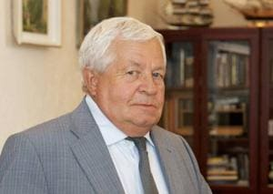
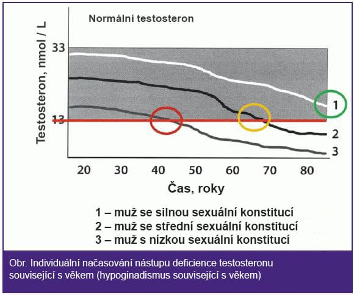

Mladá uroložka řekla, jak se jí podařílo obnovit potence u mužů ve věku 60–70 let
Přes svůj mladý věk, mladá uroložka Alžběta Kubíčková je chytřejší než profesoři, kteři jsou známý po celé zemi. Tato žena má každý měsíc frontu mužů. Velmi efektivní je mladý lékař, který pomáhá obnovit účinnost, která zmizela po 50 letech.
Naše korespondentka dokázala pohovořit s nejlepší urologkou Urologického ústavu Alžběty Kubíčkové.
Alžběta Kubíčková - urologička, lékařka nejvyšší kategorie, docentka urologického ústavu, hovořila o moderním zacházení s impotencí na přední lékařské univerzitě v zemi.- Alžbětа, muži 60 a 70 let vás přicházejí navštívit. Je opravdu nutné mít sex v tomto věku?
- Samozřejmě, potřebujete! Speciálně pro muže. Zdraví přímo závisí na tom a jak rychle stárne.
Jsem vždy upřímně překvapen těmi pacienty, kteří přicházejí s prostatitidou nebo adenomem, a když se jich zeptám: „Kdy jsi měl naposledy sex?“ Usmívali se a odpovídali: „Doktore, jaký sex? Nedělal jsem to už 7 let. “ Proto prostatitida. A pokud budete i nadále mít sex, pak tam bude rakovina prostaty.
Absence pohlaví je extrémně škodlivá jak při 30, tak při 40 a při 50 a 70! Prostata je orgán, ve kterém se vytváří ejakulát. To by mělo být utraceno. Pokud není spotřebován, začne se to doslova zhoršovat. V prostatě se objevují patologické kongestivní jevy (hromadění nebezpečných mikroorganismů). Vedou k zánětu prostaty (prostatitida). Zanícená žláza prostaty po dlouhou dobu je adenom, potíže s močením a pyelonefritida. Další fází po adenomu je rakovina prostaty. U těch, kteří mají problémy s potencí, se rakovina prostaty vyskytuje 7krát častěji než u zdravých mužů.
A to je jen jeden z nebezpečných důsledků. A je jich spousta. Dá se říct, že dlouhodobá abstinence je ve skutečnosti rychlá smrt. Protože celé lidské tělo je určeno k reprodukci. A když tato funkce zmizí, tělo začne katastroficky rychle stárnout. Cévy se ztenčují a praskají, zvyšuje se riziko infarktu a cévní mozkové příhody a objevují se poruchy psychosomatického systému. Muž rychle zčervenal (pokud se předtím nezměnil šedě). Klouby začínají bolet, držení těla se ohýbá. I nespavost, která trápí lidi ve věku, je spojena s nedostatkem pohlaví a nedostatečnou produkcí řady hormonů.
Chci ukázat nějaké fotky toho, co se děje s genitourinárním systémem a dalšími vnitřními orgány člověka, když přestane mít sex.
Vypadá to jako zánět prostaty v důsledku stagnace v nich (při absenci vyprazdňování varlat, ke kterému dochází během). Prodloužený zánět vede nejprve k adenomu a poté k rakovině prostaty (na kterou podle statistik umírá 38% mužů). V nepřítomnosti pohlaví se to vždy děje, proto je adenom považován za nemoc starších lidí.
Samotná rakovina prostaty. Byla diagnostikována u muže ve věku 58 let. Důvodem je prodloužená abstinence (od 51 let). Ten muž je mrtvý.
V důsledku přetížení v cévách se objevují sraženiny cholesterolu, které mohou vytvářet krevní sraženiny. Krevní sraženina je vysoká pravděpodobnost infarktu nebo mrtvice. Byl to infarkt, který zabil člověka, jehož srdce můžete vidět na fotografii.
Stále si myslíte, že nemusíte mít sex? A příležitost mít sex je stabilita ve vztazích. Bohužel existuje příliš mnoho případů, kdy muž po problémech s potencí zůstává sám. Ženy mohou mít sex až 70–80 let. A oni to taky potřebují. Obecně platí toto pravidlo: čím déle má pár sex, tím déle žije.
- Říká se, že klinice užíváte jedinečné léky k obnovení potence, který pomůže vrátit radost ze sexu pro muže v každém věku. Je to tak?
- Naše klinika byla vždy známá vysokým procentem léků na různé nemoci. Protože jsme v oblasti urologie hlavním ústavem země, často používáme jedinečné léky, které vyvíjejí naši vědci. Pokud mluvíme konkrétně o sexuální sféře mužů, pak ano, máme speciální lék - vývoj naší univerzity - jmenuje se „“.
nejen zvyšuje vzrušení bezprostředně po podání (může být použit jako afrodiziakum jako bezpečný analog Viagra), ale také při pravidelném vstupu obnovuje jeho přirozenou účinnost. Takový lék neexistuje nikde jinde a v lékárnách se neprodává.
- Můžete nám říci více o účinnosti tohoto prostředku?
- Prostředek je opravdu velmi dobrý. Svědčí o tom alespoň skutečnost, že se na mě domlouvají několik týdnů předem. Zároveň nedělám nic zvláštního - jen předepisuji tento prostředek, po kterém si ho můžete koupit v lékárně našeho ústavu nebo objednat na webových stránkách..
Pokud mluvíme o účinnosti u, pak chci ukázat výsledky jeho klinických studií, které institut provedl v 2018-2019. Celkem se jich zúčastnilo asi 400 mužů nad 50 lety. Mnoho jich nemělo sílu několik let.
Výsledky výzkůmu:
- Plná obnova potence (bylo možné mít sex alespoň 1krát týdně) - 96% subjektů
- Hladiny testosteronu se zvyšují - 94% subjektů
- Normalizace močení (včetně počtu nutkání) - 98% subjektů
- Zlepšení celkové pohody - 99% subjektů
- Žádné vedlejší účinky - 100% subjektů
To znamená, že je to opravdu velmi dobrý prostředek.
ИInovativní mechanismus účinku léku na genitourinární systém u mužů.
Rozhodli jsme se zjistit podrobnosti o působení u na genitourinární systém člověka od jednoho z vývojářů prostředku - čtěný doktor České Republiky, profesor, hlavní urolog Urologického ústavu - Ján Blažek.
 "Nerozumím všem těm mužům, kteří se ve věku 50-60 let skloní a rozhodnou se, že s tím nelze nic udělat a ukončit svůj sexuální život." Proč? Kdy se můžete bavit až do stáří! “- Jáne, díky kterému učínku „“ pomáhá účinně bojovat s erektilní dysfunkcí za 60-70 let? Jaký je jeho mechanismus působení?
Hlavním důvodem špatné účinnosti je nedostatek testosteronu. Právě na tento problém je zaměřen učínek u.
Testosteron je v podstatě mužský hormon vzrušení. Čím více to je, tím silnější muž chce ženy a silnější je jeho potence. Vrcholná produkce testosteronu je 18-22 let. Pak se jeho výroba začíná snižovat - nejprve pomalu a pak je rychlejší. Podle toho, jakmile se testosteron zmenší, potence zmizí a tělo začne stárnout.
 Ke snížení hladiny testosteronu dochází u všech mužů - někdo rychlejší, někdo pomalejší. Při hladině testosteronu nižší než 13 nmol / l se účinnost zcela zmizí.
Kromě stáří ovlivňují produkci testosteronu vnější faktory - špatné návyky, nezdravá strava, škodlivá ekologie (například pokud osoba pracuje ve škodlivé produkci) a mnoho dalších.
To vše vede ke zrychlenému snížení hladiny testosteronu a v důsledku toho k dřívějšímu výskytu impotence.
Zkontrolujte, zda jste snížili produkci testosteronu na následující příznaky:
- Neustálý nedostatek síly
- Svalová slabost
- Časté bolesti hlavy
- Problémy se žaludkem
- Vždycky chcete spát
- Žádná sexuální touha
- Pomalá reakce
- Poškození paměti
- Tlakové rázy
- Svalování svalů a kůže
- Apatie a podrážděnost
- Vypadávání vlasů
- Běžné zdravotní problémy
Alespoň 2 z těchto příznaků naznačují, že hladina vašeho testosteronu je nízká. Musí být zvýšena. Poté bude obnovena účinnost.
dokonale obnovuje produkci testosteronového hormonu. Působí přímo na Leydigovy buňky varlat u mužů, což vede k normalizaci jejich funkce až do věku 20–30 let. Výsledkem je obnovení energie a samotné tělo je mnohem mladší.
Jak již bylo zmíněno, mnoho z těch, kteří si už nemysleli, že by někdy mohli mít sex, se do něj zapojí po 3-4 týdnech programu u. Musí se brát denně. Současně jsou první zlepšení patrná po několika dnech. Prostředek nejen vrací účinnost, ale také pozitivně ovlivňuje celé tělo muže, protože testosteron je hlavní mužský hormon.
"Dáváte slevu na tento lék, že?"
To je pravda. Všichni muži, kteří se chtějí pokusit obnovit sílu. Nyní máme na skladě asi 1 000 balíčků za propagační cenu, my (já a moji podřízení) jim pošleme první, aby zanechali požadavek.
je zcela přirozený - obsahuje vysoce koncentrované výtažky z nejužitečnějších rostlin pro muže přinesené z celého světa. Proto může být užíván bez lékařského předpisu doma.
Na rozdíl od Viagry, obnovuje přirozenou sexuální touhu a sílu - to znamená ty, které se objevují samy o sobě bez použití afrodiziakum.
Co je potřeba k objednání u na povýšení?
- 1. Zúčastněte se v slosování.
- 2. Po 5-7 dnech (dodací lhůta) dostanete bálení od kurýra.
Pomáhá skutečně obnovit energii ve stáří? Výsledky průzkumu
Web Urologického ústavu (to byl tento institut, který vyvinul ) v současné době provádí průzkum mezi těmi, kteří použili .
Jedinou otázkou je: „Pomohl vám obnovit přírodní potenciál?“

Komentáře
Pavel Novotný
Vyhrál slevu na "". Díky moc. Slíbili, že za 5 dní bych to mohl obdržet na dobírku.
Vlastimil Rohla
Taky se zúčastnil a získal slevu. Už nechci přestavát. Opravdu doufám, že pomůže. Viagra je kvůli kontraindikacím zakázána - mé srdce je špatné.
Ondřej Pavlík
Plně to potvrzuji. je vynikající prostředek. Je mi 54 let. V poslední době neexistuje téměř žádná energie. Objevil se velmi zřídka. Zkoušel jsem spoustu všeho, abych to dostal zpět. Lidové recepty, prášky, šel jsem mnohokrát k urologovi. Jediná věc, která pomohla, byla teto prostředek. Jednou týdně je sex stabilní. Navíc se jeho zdraví zlepšilo, protože testosteron je prospěšnější pro mužské tělo.
Šimon Bláha
Taky jsem se cítil, jako v mladí po léčbě em.
Peter Mach
Objednal jsem to. Stále mám. Doručení na dobírku. Na internetu jsem si nikdy nic objednal, ale ukázalo se, že je to jednoduché. Vše, co musíte udělat, je nechat své telefonní číslo. A pak konzultant sám zavolal zpět a zeptal se, na kterou adresu doručit.
Dominik Hruška
Četl jsem podrobnosti o ovi. Působivé! Účastním se! Pro důchodce je to velmi užitečný prostředek. Testosteron je ochrana proti stáří.
Andrea Žáková
Manžel musí v soutěži zvítězit. 48 let a energie je pryč. A je mi jen 41 a pořád chci sex.
Jaroslav Vacek
Soused po chatě. 65 let. Má sex se vší silou. Tento prostředek taky používá. Viděl jsem ho balení.
Otakar Vopička
Objednal ve slevě.
Jaromír Bláha
To je opravdu něco... Piju jen týden a sexuálně se cítím už o 10 let mladší. Předtím mi pomohla pouze Viagra, ale Viagra je velmi škodlivá. Doporučuji tento prostředek všem!
Aleš Pokorný
Je mi 61 let, 5 let nebyla žádná energie. Šel jsem k urologovi (na jiný problém), pak jsem mimo jiné doporučil, abych začal brát program u, abych zlepšil celkovou pohodu. Po programu jsem se cítil sexuálně přitahován. Nyní není často, ale objevuje se potence. Někdy máme sex. Začal jsem se cítit lépe.
Ludvík Navrátil
Včera jsem dostal bálíček
Karel Veselý
Nemám erektilní dysfunkci po dobu 3 týdnů. Radím všem. Jediný prostředek, který opravdu pomáhá. Je mi 59.
Vilém Bartoš
Dostal jsem slevu. Odborník řekl, že zbývá více než 200 balíčků. Ale rychle se rozptýlí.